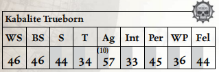

与被流放的影棘阴谋团不同，裂爪阴谋团长期维持着一支庞大的真生子阴谋团武士骨干。真生子自幼便被教导以轻蔑与嘲弄看待周围的人，视自身为优越者。平心而论，这往往确实如此——真生子孩童在漫长而无情的教养中成长为杀手，其武艺足以匹配其傲慢与野心。
在裂爪阴谋团中，速射碎片卡宾枪与精良的长柄锯齿刃刀是最为时尚的武器之一。这些半生子战士难以企及的致命装备，构成了阴谋团中许多真生子的常用武装。然而，即便最无足轻重的真生子，其财富与权力也足以使其更频繁地携带更致命、更异种的武器上阵，许多人选择携带毒晶加农炮、粉碎者、冲击枪与黑暗光矛来彻底消灭猎物。

移动： 5/10/15/30 承伤： 12
护甲： 阴谋团护甲（全身4）。 总坚韧加值：3
技能： 杂技（Ag）+10，警觉（Per）+10，化学使用（Int），指挥（Fel），通用学识（黑暗灵族）（Int），闪避（Ag）+10，恐吓（S）+20，无声移动（Ag），巧手（Ag）。
天赋： 猫落地，战斗大师，黑暗灵魂，死眼射击，困难目标，强化感官（听觉、视觉），阴谋团武器训练，闪电反射，Mighty Shot，怜悯弱者，冲刺。
特性： 黑暗视觉，痛苦即力量，超自然敏捷（x2）。
武器： 碎片卡宾枪（基础；60m；S/3/5；1d10+4 R；穿甲3；弹匣200；装填2整轮；风暴，毒素），极品工艺单分子剑（近战；1d10+5 R；穿甲2；平衡），3枚灵族等离子手雷（投掷；12m；1d10+8 E；穿甲4；爆炸（3），震击）。
装备： 各类可怖战利品，2个碎片卡宾枪弹匣。